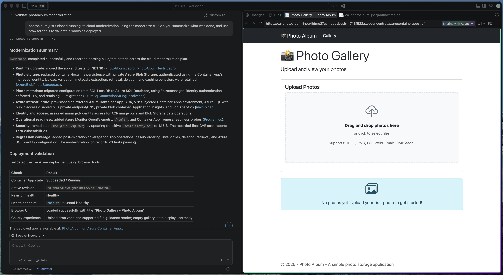

Walkthroughs & tips
Direct links to the solutions. Use these alongside the materials in your lab portal.
Set up the agent
Custom agent, skill and MCP configuration.
Open walkthrough ↗Challenge 2Assess and upgrade
Batch assessment, .NET and Java upgrades.
Open walkthrough ↗Challenge 3Modernize and deploy
Cloud readiness and Azure deployment.
Open walkthrough ↗If you get stuck
These issues came up in Pasi's lab run. Open a tip when you need it.
A walkthrough link returns 404
Open the walkthrough links above. If the lab account still cannot access them, ask a facilitator.
A sample repository won't fork
First confirm that GitHub CLI is using your lab account. If needed, use gh auth login or gh auth switch to select it before continuing.
gh auth statusRun the blocks below from the folder where you want the two sample folders. They work in Bash, Zsh and PowerShell 7+. Each block clones the sample, keeps its history, creates a private repository in your signed-in account and pushes the code. No repository URL placeholder is needed.
PhotoAlbum
git clone https://github.com/Azure-Samples/PhotoAlbum.git PhotoAlbum &&
git -C PhotoAlbum remote rename origin upstream &&
gh repo create PhotoAlbum --private --source ./PhotoAlbum --remote origin --push &&
git -C PhotoAlbum remote -vPhotoAlbum-Java
git clone https://github.com/Azure-Samples/PhotoAlbum-Java.git PhotoAlbum-Java &&
git -C PhotoAlbum-Java remote rename origin upstream &&
gh repo create PhotoAlbum-Java --private --source ./PhotoAlbum-Java --remote origin --push &&
git -C PhotoAlbum-Java remote -vThe sample remains available as upstream; origin points to your new repository. The && operators stop the remaining commands if one fails.
These blocks are for a fresh setup. If a folder or repository already exists, stop and inspect it before retrying. If your lab account cannot create a private repository, ask a facilitator for an approved destination.
Compare the modernization routes
Modernize one app with the Modernize CLI or the VS Code modernization extension. Modernize the other with Copilot Chat or Copilot CLI alone. Compare the plan, changed files and validation output.
Watch what Modernize writes
Keep an eye on the file system while the CLI runs. Open the skills it creates and trace how they feed the plan, commands and validation. Seeing the files change makes the flow much easier to understand.
Keep the lab folders together
Use one parent folder for the lab configuration and both sample repositories. Keep .github at this level so the agents and skills from Lab 1 are available to both apps.
.
├── .github (agents, skills and other Lab 1 files)
├── .vscode
├── PhotoAlbum
├── PhotoAlbum-Java
└── repos.jsonTell the plan to use your Lab 1 skill
Name the skill you created in Lab 1 when you ask for the plan. The planner does not reliably select it by itself.
Use the [your-skill-name] skill from Lab 1 while creating this plan. Explain where it affects the work.
Ask Copilot to show its validation
In VS Code Copilot Chat or the Agents view, ask the model to validate the result in a browser and show you what it checked. This gives you something concrete to discuss during the presentation.
Validate the deployed app in the browser. Show the checks you ran, the result of each check and the page you verified. Then create a small HTML report that summarizes the evidence.

Azure Policy blocks deployment
In Pasi's run, subscription policies required VNet configuration that the generated deployment files did not satisfy. Read the actual denial message and policy name before changing the deployment.
Add the specific constraints to the plan's instructions before execution. You can start with this prompt and include the error details:
Check the target subscription's policies. Update the deployment files to meet the required networking rules. Validate before retrying. Do not disable policies. Ask me if permissions block the fix.
Review the proposed changes and validation output, then retry. If the agent cannot read the policy, ask a facilitator for the rules. Check the deployed resources and both frontends after the deployment completes.
Azure Policy deployment error referenceSample repositories and reference instructions
Keep your work in your own copies of both repositories. Check origin before pushing.